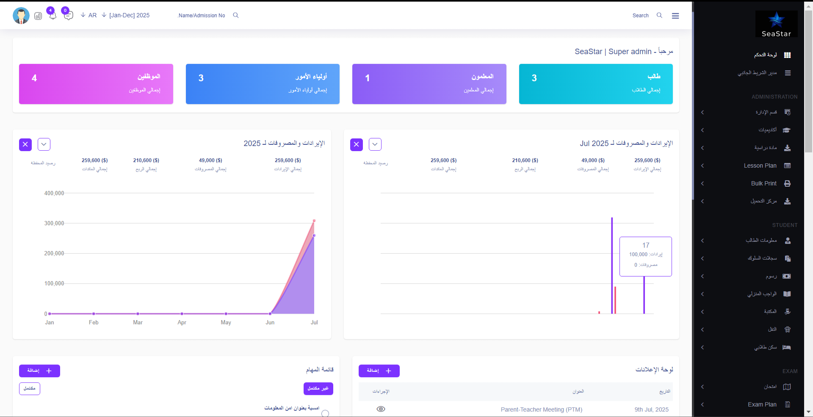
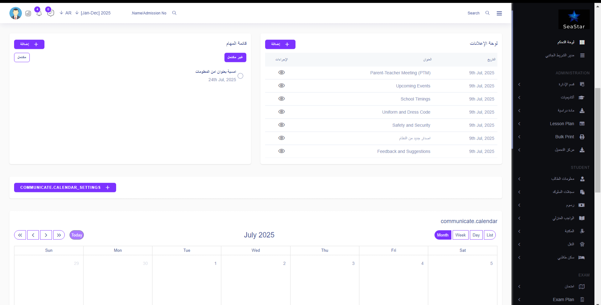
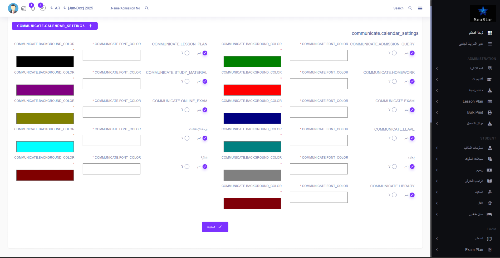
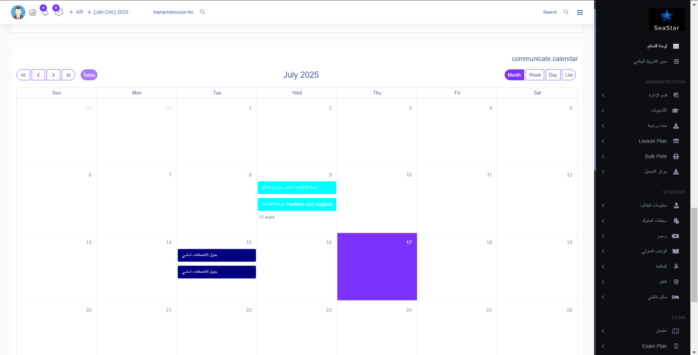

تخيل أنك تقود سيارتك بلوحة قيادة تعرض لك كل البيانات الحيوية بوضوح تام. لوحة التحكم الرئيسية في SeaStar تقدم لك ذلك بالضبط: نظرة شاملة وذكية على أداء مؤسستك التعليمية في لحظة واحدة.
اعرف عدد الطلاب النشطين، الموظفين، الرسوم المستحقة، وأحدث الإشعارات دون الحاجة للتنقل بين الصفحات. هذه ليست مجرد شاشة عرض، بل هي مركز قيادة SeaStar الذي يضع القوة والوضوح بين يديك لاتخاذ قرارات سريعة وفعالة.
مميزات اللوحة الرئيسية:
- نظرة فورية على مؤشرات الأداء الرئيسية (KPI)
- مخططات بيانية تفاعلية لتطور أعداد الطلاب والإيرادات
- لوحة إشعارات ذكية تعرض أحدث الأحداث والتنبيهات
- وصول سريع إلى الأقسام الأكثر استخدامًا
- تخصيص كامل لعناصر اللوحة حسب احتياجاتك



